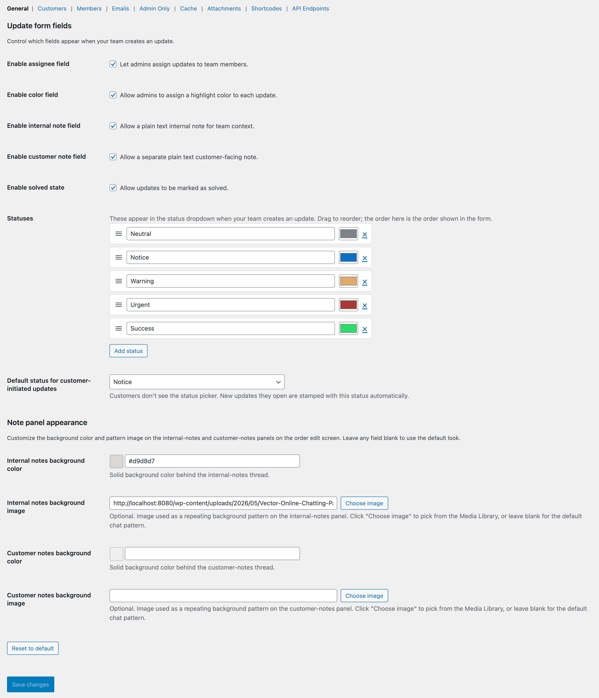

Getting started
If you’ve just installed the plugin, you can be up and running in three minutes. Activate it, look over the settings, and create your first update. The default settings are good — you can change them as you go.
1. Activate the plugin
Install from WordPress.org or upload the zip under Plugins → Add New → Upload. Activate it. On first activation the plugin redirects you to a welcome page with quick links into the rest of the admin.
The plugin creates its own database tables on activation — one for updates, one for notes, one for attachments, one for ratings. No WordPress core or WooCommerce tables are touched.

Settings → General — the most-used tab.
2. Look over the settings (optional)
Find the settings under WooCommerce → Settings → Order Updates. Defaults are set up for a small team running a single store, so you can leave most of it alone for your first update. There are nine sub-tabs — the Settings section in this guide has its own page for each one.

The Add New Update modal — one form, no wizard.
3. Create your first update
Open any order and look for the Order Updates panel. Click Add new update, write a short title, pick an assignee, and hit publish. If you want the customer to see it, write a customer note too — they’ll get an email with a secure link to view and reply.
Detailed walkthrough on the next page: Creating updates →

What the customer receives — clean layout, secure link.
4. Confirm emails are reaching the customer
The plugin uses WooCommerce’s built-in email system. If WooCommerce emails are landing in inboxes, this plugin’s emails will too. If you’ve had trouble getting WooCommerce emails through in the past, install an SMTP plugin (we recommend WP Mail SMTP) before you start using customer-note emails.